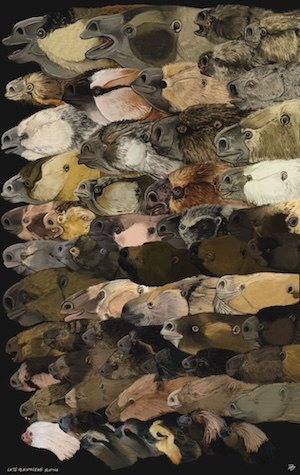

2024-12| Eggs, sloths, math, Tilda Swinton
Assorted notes; mostly eggs, it seems.
• The wooofles have apparently worn out their welcome, or anyway I. points out that maybe we shouldn’t eat a large
amount of butter and maple syrup every single morning, and in any case they occasionally and unpredictably stick
to the griddle, which is annoying. I’ve instead been experimenting with Tamago Gohan, which is a rice bowl breakfast
with semi-raw egg, after stumbling on this video recipe.
(I like this about the internet: it is a many-creviced place and sometimes someone is a bigshot in their field but
entirely new to you as of last Tuesday. In this case Kenji Lopez-Alt has been writing about food for a long time and
is well-decorated by various establishment food things, but all that was news to me. One of his first food things
was a
very long article
about how to cook and peel the perfect hard-boiled egg. He also has a cozy podcast about
food with Deb Perelman of that OG of good everyday recipe blogs,
smitten kitchen.
In ~troubled times~, food content seems to thrive.)
• On the topic of eggs, my
inimitable bestie
made his own japanese egg tutorial video, about how to make tamagoyaki,
which is perfect, though maybe requires knowledge of Czech to fully appreciate.
• An ongoing favourite thing of mine to find on the internet is “some weird thing Tilda Swinton got
up to between the Thatcher government and now”.
Here
she stars in a brilliantly tense 1996 Orbital music video whose atmosphere
you could cut into blocks. It feels like the
London I know from intermittent flashes: damp and pulsing and alien.
Something something hauntology; I love it.
• I liked
this
drawing of all 55 known species of sloths that lived during the Late Pleistocene.
(There are only 6 now; the Holocene/Anthropocene is less conducive to #slowliving I guess.)

Recently I found two really nicely written references for people working on ocean or climate things:
• Stephen Griffies wrote a 2000 (!) page draft of a
textbook on geophysical fluid dynamics
that tries to be quite comprehensive in how it explains things conceptually alongside the equations.
It also spends some time talking about how to learn, specifically in math-adjacent disciplines,
and how to cultivate kindness and non-judgement about it. This deliberate consideration of approach is
really useful, both because fluid dynamics is hard for absolutely everyone and whoever says it’s not is lying,
and also because physics-adjacent fields can at times still have a culture of the I’m-cleverer-than-you brand
of physics boy that is quite onerous and counterproductive for everyone involved (shoutout to the fellow who
quite recently tried to explain to me Newton’s second law of motion <3). Thanks to the truly brilliant
KRM
for the find!
• I am working through
this
book on statistical methods for climate science.
It’s nice in that it both mathematically derives common methods used in climate science
(which I often don’t need to know practically but which can help me understand where things come from)
and discusses how to apply them, along with pitfalls in approach (which I really do need and which isn’t
necessarily obvious). I’m really far from being an expert on statistics, and simultaneously
it’s often really easy to practically apply a method, which can obviously lead to problems, and I’m
trying for myself to bridge the gap between the two.
🇵🇹 Another stop on a reading tour of Europe: Pereira Maintains by Antonio Tabucchi.
Aging journalist in Franco-era Portugal, whose life is mostly solitude and lemonade in cafés,
gets a kick in the pants meeting some radical youngsters. It maintains a nice tension between
deftly sketched atmosphere, laconic understatement, and absolute avalanches in internal and external
constellations. It reminded me a bit of
Io Sono Amore, which is about something entirely different but
which also has memorable atmosphere, and avalanches. (Technically PM is an Italian book set in Portugal, but whatever).
🇪🇸 I’ve been somewhat hamstrung in reading my chosen book from Spain -
Hija del Mar, by Rosalía Castro, written in 1859 in Galicia - for a rather funny reason.
I bought a translation, only to find that it was ChatGPT generated to the point of being useless.
I’m torn between being sick of the grifter boys (they are overwhelmingly boys) and somewhat
admiring the unorthodox hustle inherent in attempting to monetize an obscure nineteenth century Galician novel.
(The
full original text
is online, so I will just read it much more slowly in Spanish, I guess.)